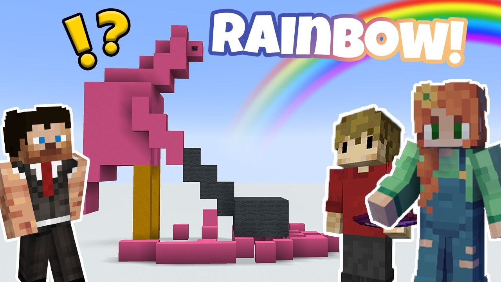
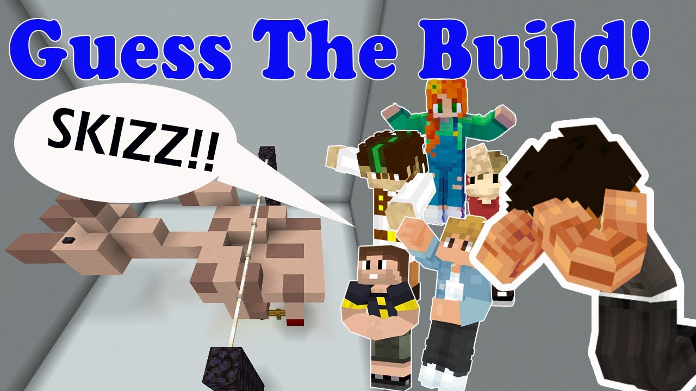
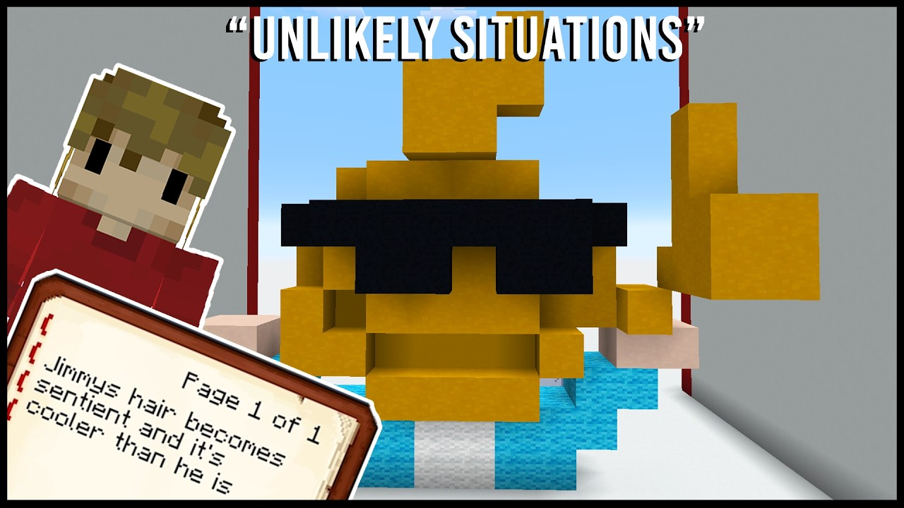

This hump-backed flamingo was first created in May 31st, 2025, as a result of youtuber Grian's "Guess the Buld" series. Personally this is one of Skizz's tamer builds in the sense that he at least got the colors correct (foreshadowing).
This is what I mean when I say it is rare for him to get the colors correct. This giraffe was built in the "Guess the Build" episode on Sep 15th, 2024. I don't understand to this day why he chose to make a cartoon giraffe with a realistic giraffe's color palette.
MY BOY! (also known as "eefo") This build was created May 27th, 2024, and went on to be a massive meme both within the Hermitcraft community and outside of it. as terrible of rendition of the youtuber it's supposed to be (EthosLab), it still garners the most attention out of all of his builds.
